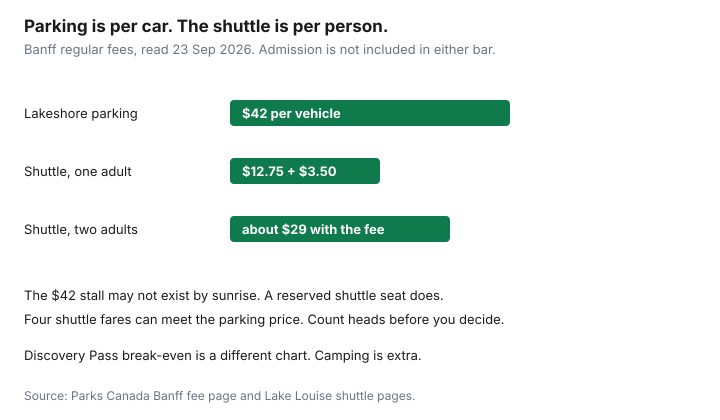

Travel · Canada
Banff and Jasper on a Budget from Canada: Shoulder Season, Transit, and Park Fees
Banff and Jasper are not expensive because the trails have a cover charge. They are expensive because a peak-week hotel in the village, a full parking lot at Lake Louise, and three restaurant days stack on top of a park gate. A household driving from Calgary, Edmonton, or further can cut that stack without pretending it is a backcountry expedition: travel in the shoulder, pay the park fees on purpose, sleep outside the dearest ten blocks, and eat from a grocery bag except for one dinner you chose.
Fees below were read from Parks Canada and Roam on 23 Sep 2026, after the Canada Strong Pass ended. Lodging quotes are not invented here. You will pull those the week you book. The Discovery Pass break-even is one paragraph and a link, not a second article. The drive itself uses the road-trip sheet.
Disclosure: Hotel booking sites and car-rental comparison sites are offer types. Saving Optimizer may earn a commission if we later add those links. We do not currently claim a hotel, rental, or Parks Canada partnership. Education only.
Key takeaways
- Regular Parks Canada fees apply from 8 September 2026. Shoulder weeks that still have campgrounds and the parkway in ordinary conditions are early June and September before the published closing dates. Confirm the road the week you go.
- Banff adult daily admission is $12.25. The adult Discovery Pass is $83.50. Whether the pass wins is the other guide. Camping and Lake Louise parking are not in the pass.
- Lake Louise lakeshore and Fairview parking are $42 per vehicle. The Parks Canada shuttle is $12.75 adult plus a $3.50 online booking fee. Roam local in Banff is $2 adult. Roam to Lake Louise is $12.50 adult.
- A bed in Canmore, or a Tunnel Mountain campsite with the local bus, is the lodging lever. Compare it with the village rate after transit, not before.
- Groceries plus one restaurant night beat a restaurant week. Trails are the free highlight. The gondola and the hot springs are optional purchases.
- For the 2026 season, Jasper camping reservations launched 27 January and Banff’s on 12 February, at 8 a.m. MT. Next year, read that year’s launch list. Do not assume the weekday repeats.
Shoulder-season windows that cut lodging without closing key roads
Peak is the last two weeks of July and the first half of August, plus holiday long weekends. Lodging in Banff village in those weeks is a different product from the same room in mid-September. The constraint is what is open, not the adjective “shoulder.”
Parks Canada’s Banff camping page lists Lake Louise soft-sided camping from 29 May to 23 September. Other frontcountry campgrounds close on their own dates through September. Some, including Lake Louise hard-sided sites, are published as year-round. The Icefields Parkway between Lake Louise and Jasper is the road a Banff-and-Jasper week depends on. It is a highway that also closes in segments for storms, accidents, and construction. No page on this site can promise it will be open on your Tuesday. Check the Alberta highway report the week you drive, and have a night you can spend on the side you are already on.
The practical windows, if you want lower lodging and you still want campgrounds and the parkway in their open season:
- Early June, after the late-May campground openings, before school ends and the village rate jumps. Trails at higher elevation can still hold snow. Pack for that. Do not pack for August and then complain about a pass.
- September after Labour Day, through the campground closing dates you actually need. The Canada Strong Pass ended 7 September 2026. From 8 September you pay regular admission and regular camping. The crowd is thinner than August. The larch season later in September is popular on specific trails. A “quiet” week is not every September week.
Winter is cheaper beds and a different trip: many campgrounds closed, some visitor services closed, and daylight you have to plan. It can be the right trip. It is not the same budget sheet with a lower hotel rate pasted on. If your only week off is the third week of July, the shoulder method will not create a September rate. Use the lodging and food rules below inside the week you have, and expect to book earlier.
Park admission, Discovery Pass, and paid parking/shuttle line items
Put three public fees on the sheet before the hotel. They are published. They are also the lines people treat as tips.
Admission. Banff’s regular daily rate from 8 September 2026 is $12.25 for an adult, $10.75 for a senior, youth free, and $24.50 for a family or group day pass. The Discovery Pass is $83.50 adult, $71.50 senior, $167.50 family or group, for 12 months of admission at participating places. At those daily rates the adult pass costs less than paying daily on the seventh paid entry. One drive into the park for a whole week may be one entry, not seven. That arithmetic, and what the pass excludes, is the Discovery Pass guide. Use it. Do not rebuild it here. Jasper admission is its own fee page if your gate is Jasper and not Banff. Do not assume the Banff daily rate is the Jasper daily rate without looking.
Parking that admission does not cover. Lake Louise lakeshore general parking and Fairview day-use parking are $42 per vehicle on the Banff fee page. Sulphur Mountain area general parking is $17.50. Parks Canada’s shuttle FAQ says this parking is not included in admission or a Discovery Pass, and it was not included when admission was free under the Strong Pass. The lakeshore lot fills, including before sunrise in peak season, and there is no waiting lane. A $42 fee you cannot use because the lot is closed is $42 plus a new plan.
Shuttles. The Parks Canada Lake Louise and Moraine Lake shuttle, on the same fee page: adult $12.75, senior $6, youth 17 and under $4, plus a non-refundable reservation fee of $3.50 online or $5.50 by phone. One reservation can hold up to 10 seats, and the reservation fee is charged once per reservation. The ticket does not include park entry. Parking at the Lake Louise park-and-ride is free for shuttle passengers. Roam, the local transit system, is the other bus. Banff local routes are $2 adult, $1 youth or senior, children 12 and under free. The Banff–Lake Louise express is $12.50 adult and $6.25 youth or senior, and Roam says reservations on that route carry a $3 transaction fee per booking. Johnston Canyon on Roam is $5 adult.
| Line | Amount |
|---|---|
| Adult daily admission | $12.25 |
| Adult Discovery Pass | $83.50 (see the break-even guide) |
| Lake Louise lakeshore parking | $42 per vehicle |
| Parks Canada shuttle, adult | $12.75 plus $3.50 to reserve online |
| Roam local, adult | $2 |
| Roam Banff–Lake Louise, adult | $12.50 plus $3 if you reserve |

Two adults who ride the Parks Canada shuttle pay about $12.75 × 2 + $3.50 = $29, plus admission, and they have a reserved seat. The same pair in a car pays $42 to park if a stall exists, plus admission. A family of four in one car can still prefer the car when the lot is open, because four shuttle fares plus the booking fee land near the parking price and the car is already paid for. Do the headcount. Do not take a slogan.
Stay outside the village core and transit in vs paying peak Banff rates
The village rate is a location premium. You are paying to walk to dinner. If you will ride the bus anyway, pay for the bus and not for the block.
- Canmore is outside the park gate, with groceries a normal supermarket can stock. You will pay admission when you enter the park, and you will drive or ride in. Compare a Canmore night plus Roam or a car against a Banff night. Use the all-in lodging total, not the first number on the listing. A rental cleaning fee spread over two nights often loses to a simple hotel.
- Tunnel Mountain campgrounds are about 2.5 km from the town of Banff, with Parks Canada noting public transit into town. Unserviced sites with showers are about $34 a night at the regular rate, electrical about $40, full hook-up about $47.25. That is the bed. It is not the village hotel. It is the right comparison when the hotel is $300 and you own the camping gear.
- Lake Louise village is not a budget bed in summer. Sleep in Banff or Canmore and bus up for the day unless you already hold a campsite at Lake Louise.
- Jasper town has the same pattern: the core is the premium, and a cabin or campsite outside it plus a planned drive is the budget. Hinton, outside the east gate, is the Canmore-style question on that side. Price the fuel back and forth before you call it a save.
Loyalty and portal tricks are a second step, after a shoulder rate exists. A member discount on a $400 August night can lose to a $180 September night with no discount at all. If you are choosing a channel, use the direct versus portal rule. Do not let it pick the month.
Food plan: groceries + one restaurant night vs full restaurant trip
Banff Avenue will sell you every meal. The budget version is the cooler plan from the road-trip guide, aimed at this town.
- Buy groceries in Canmore or at a Banff supermarket on the way in, not at a trailhead kiosk. Breakfast and lunch from that bag: oats, bread, cheese, fruit, something that was already cooked.
- One restaurant night for the table, with a cap. A celebration dinner is allowed. A celebration dinner every night is the hotel you thought you had avoided.
- Pack the lunch you will eat at the trailhead. A $22 sandwich at a lake is a choice. It should not be the default because you left the groceries at the campsite.
A labelled food sketch for two adults, four days: about $140 of groceries and one $110 dinner, versus about $180 a day if every meal is seated. The second number is a warning, not a menu audit. Four days seated is on the order of $700. The grocery version in the sketch is about $250. The gap pays for several shuttle days. A family of four should expect the grocery line to rise less than the restaurant line. Cook once, eat the leftovers, and keep the restaurant on a single night.
Free and low-cost activities that beat priced experiences
You have already paid admission. Spend it on the place.
- Free with admission, or simply outside: town trails, river walks, Vermilion Lakes if the road is open, and the shoreline walks that are not behind an extra ticket. Read the wildlife closures the morning you go. A trail that is closed for a bear is not a negotiation, and it is not a reason to buy a tour out of frustration.
- Low cost: Roam to a trailhead you would otherwise have driven. Johnston Canyon at $5 adult is the example. The Parks Canada shuttle when the alternative is a $42 lot that is full.
- Paid, and often the wrong first purchase: the gondola, a booked “instagram” tour of a lake you can reach by shuttle, and the Upper Hot Springs. Hot springs that charge admission are not included in the Discovery Pass. If the hot springs are the thing you came for, buy them and skip a second paid slot that day. If they are an afterthought, they are the line to cut.
One paid highlight for the whole trip is enough if the highlight is a day on the water or a guide you actually want. Two paid highlights a day is how a mountain week starts to look like a theme park. The family version of that cap is in the per-day family guide.
Book lodging and Parks Canada campsites early—waitlists and release calendars
The cheap week exists only if a bed exists. Parks Canada releases reservations on a published launch calendar, with a queue on the popular campgrounds. For the 2026 season the reservation page listed:
- Jasper frontcountry camping: Tuesday, 27 January 2026, 8 a.m. MT, with a queue. Backcountry the next day.
- Banff frontcountry: Thursday, 12 February 2026, 8 a.m. MT, with a queue. Backcountry for Banff, Kootenay, and Yoho on 26 January 2026.
- Lake Louise and Moraine Lake shuttle: Wednesday, 15 April 2026, 8 a.m. MT, with a queue.
Those dates were the 2026 launch. The next season will have its own list. Read it in January. Do not assume the second Thursday in February is a law of nature. Popular sites go in the first hour. If you miss the launch, check cancellations, look at a less famous campground, or move the night to Canmore and transit in. A waitlist is a hope, not a bed. Do not build a non-refundable flight on a waitlist.
Provincial sites are a different calendar. Alberta Parks opens regular camping on a rolling 90-day window at 9:00 a.m. MT. Kananaskis and the foothills are that system. A Parks Canada pass does not reserve them. If the mountain campgrounds are gone, a provincial site plus a drive can be the backup, priced with fuel.
Order of operations for a household that wants the budget version: pick the shoulder week, set a reminder for the launch morning, book the campsite or the Canmore room, then book the shuttle, then decide the Discovery Pass from the other guide’s gate-day count. The hotel portal is the last tab you open, not the first.
Sources & date stamps
- Parks Canada, Banff National Park fees — regular admission, camping examples, Lake Louise parking $42, Sulphur Mountain area parking $17.50, shuttle fares and the $3.50 online reservation fee, in effect as regular fees from 8 Sep 2026. Used 23 Sep 2026.
- Parks Canada, Canada Strong Pass note — free admission and discounted camping ended 7 Sep 2026. Used 23 Sep 2026.
- Parks Canada, Banff camping page — Lake Louise soft-sided dates 29 May–23 Sep; Tunnel Mountain location and transit note. Used 23 Sep 2026.
- Parks Canada, Lake Louise shuttle pages — park entry not included; park-and-ride parking free with a shuttle reservation; lakeshore parking not included in a Discovery Pass. Used 23 Sep 2026.
- Parks Canada reservation launch list for the 2026 season — Jasper 27 Jan 2026, Banff 12 Feb 2026, Lake Louise shuttle 15 Apr 2026, 8 a.m. MT. Used 23 Sep 2026. Future seasons need that year’s list.
- Roam Transit fares — Banff local $2 adult; Banff–Lake Louise express $12.50 adult; $3 reservation transaction fee; children 12 and under free. Used 23 Sep 2026.
- Discovery Pass break-even math is in the linked guide, not recalculated here beyond the published Banff prices.
Frequently asked questions
When is shoulder season in Banff and Jasper?
Use the campground calendar, not a mood. Lake Louise soft-sided camping is listed from 29 May to 23 September. Many Banff frontcountry campgrounds close through September. The Canada Strong Pass ended 7 September 2026, so regular admission and camping fees apply from 8 September. Early June, after seasonal campgrounds reopen, and September after Labour Day, before those campgrounds close, are the weeks that cut lodging without giving up the Icefields Parkway in ordinary conditions. Temporary road closures still happen. Check the highway the week you go.
Does the Discovery Pass include Lake Louise parking?
No. Parks Canada says lakeshore and Fairview parking are not included in admission or a Discovery Pass. The regular fee on the Banff fee page is $42 per vehicle at those lots, and $17.50 in the Sulphur Mountain area. The pass break-even itself is the Discovery Pass guide: adult daily $12.25 versus $83.50 at Banff’s regular 2026 rate.
Is the shuttle cheaper than driving to Lake Louise?
Often, once parking is $42 and the lot is full anyway. The Parks Canada shuttle is $12.75 for an adult, $6 for a senior, and $4 for youth, plus a $3.50 online reservation fee. Roam’s Banff to Lake Louise express is $12.50 for an adult, with a $3 reservation fee on that summer booking. The shuttle ticket does not include park admission. Park-and-ride parking for the Parks Canada shuttle is free with a reservation.
Where should we stay if Banff village is too expensive?
Price Canmore, or a Tunnel Mountain campsite about 2.5 km from town with Roam local transit at $2 for an adult. Add the bus to the lodging gap. A cheaper bed that needs a taxi every meal is not cheaper. Book the bed and the campsite when the release calendar opens, not in July.
What is free once we have paid admission?
Trails, lakeshore walks where you are allowed to be, and time in town. Roam local routes are $2, and children 12 and under ride free. The gondola, guided tours, and the hot springs are paid extras. The hot springs are not included in a Discovery Pass. One restaurant night plus groceries beats a restaurant week.